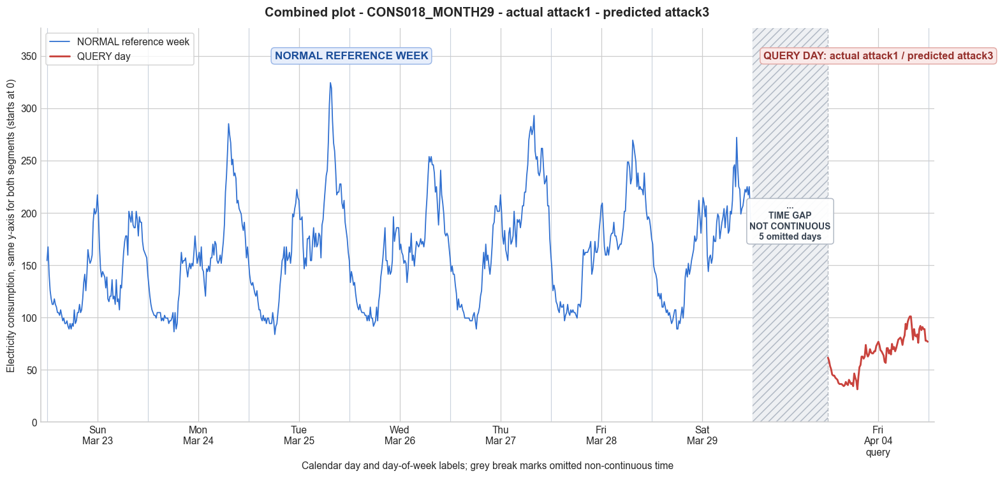

CONS018_MONTH29 · actual attack1 · predicted attack3
- Pair
- CONS018_MONTH29
- GT
- attack1
- Prediction
- attack3
- Binary GT
- attacked
- Binary Prediction
- attacked
- Source
- E010
- Parse
- stored
- Date
- 2014-04-04
- Weekday
- Friday
- Latency
- 2.49 min
- Tokens
- 11215

Final output
Classification: - Manipulated Identified Attack: - Most Likely: Attack 3 - Confidence: High - Reasoning: The query day shows drastically reduced consumption compared to the reference Friday (mean 64.54 vs 167.51), with clear evidence of manipulation. The ratio between the query day and the reference day varies across samples (e.g., ~0.39 at midnight, ~0.29 at 7 AM, ~0.39 at 8 PM), indicating a per‑sample scaling factor rather than a constant multiplier. This rules out Attack 1 (constant factor) and Attack 2/5/6/7/9/10/12/IEEE (zero segments, random average‑based values, cut‑offs, flat profiles, or pattern reversal). Attack 4 (theft over a random period) is less specific; if the whole day were selected, it would behave like Attack 1, not explain the sample‑wise variation observed here. The per‑sample random scaling is the defining characteristic of Attack 3. Attack_Behavior_Explanation: - How consumption values are manipulated: Each 15‑minute sample of the actual consumption is multiplied by a different random factor between 0 and 1. In the queried day, this results in a non‑uniform reduction where some intervals (e.g., morning dip) are scaled more severely than others (e.g., evening peak), preserving the general daily pattern but with varying degrees of suppression. - Impact on magnitude and trend: Magnitude is significantly reduced overall—the daily mean drops from ~167 to ~64, and the minimum falls from ~96 to ~31. The trend is altered because the random per‑sample multipliers introduce distortions; the overall diurnal shape is recognizable but less consistent than the original. - Possible technical causes: False data injection (manipulating the communication stream with randomly scaled values), physical tampering such as magnetic interference or reverse current that introduces non‑linear measurement errors, or a partial meter bypass that intermittently reduces the recorded consumption in a non‑uniform manner.
Prompt
You are a domain expert in smart grid security and electricity theft analysis, with deep knowledge of non-technical loss (NTL) attack patterns in smart meters. You are given: 1. A plot of one week of original (normal) energy consumption for a smart meter, provided as context for the customer's typical consumption behavior. 2. A plot of one day of energy consumption for the same smart meter, which may or may not be manipulated. Below are common attack types, each defined by how consumption values are altered, their impact on magnitude and trend, and their possible technical causes. Attack 0: Generated by replacing all electricity consumption samples with zero values for the entire observation duration. Simulates a scenario where no energy usage is reported at all. May be caused by a total meter bypass or severe meter malfunction. Completely eliminates both the trend and magnitude of the consumption profile. Attack 1: Multiplies the actual energy consumption by a constant random value between (0,1). The lower the factor, the higher the severity. Can be triggered by meter bypass, magnetic interference, reverse current, and false data injection. The consumption trend remains the same but the magnitude is uniformly reduced. Attack 2: Generated by replacing consumption samples with zeros for a random duration. Also known as an on-off attack. Can be caused by full meter bypass, false data injection, and reverse current. Changes both the trend and amplitude. Attack 3: The actual consumption is multiplied by different random factors between 0 and 1, with a unique factor per sample. Similar to Attack 1 but the scaling factor varies per reading. Caused by meter bypass, magnetic interference, and reverse current. Changes both the trend and amplitude. Attack 4: Simulates energy theft over a randomly selected period within the observation window. All measurements in that period are reduced. Caused by meter bypass, magnetic interference, reverse current, and false data injection. Changes both the trend and amplitude. Attack 5: Each sample is replaced by a false value obtained by multiplying the average normal consumption by a random variable between 0 and 1, with a different variable per sample. Caused by false data injection. Produces a completely different pattern from the original consumption profile, changing both trend and magnitude. Attack 6: A random cut-off point is selected and all consumption values above it are replaced by that cut-off value. The attacker avoids exceeding a predefined maximum limit. Mainly caused by false data injection. Changes both the trend and amplitude. Attack 7: A random cut-off point is subtracted from each sample; if the result is negative, zero is reported. Similar to Attack 6 but replaces exceeding values with zero instead of the cut-off point. May be caused by false data injection or total meter bypass. Does not change the trend but reduces overall consumption. Attack 9: All samples are replaced by the average daily energy consumption, resulting in a flat constant profile. Easily detectable because constant consumption does not reflect normal customer behavior. Caused by false data injection. Eliminates all trends. Attack 10: Reverses the consumption pattern without reducing the total amount. Applicable when the electricity company uses time-varying pricing, allowing the attacker to shift high consumption to off-peak periods. Caused by false data injection. Changes the trend without decreasing total consumption. Attack 12: The attacker replaces their consumption pattern with that of a lower-consuming user. The legitimate user unknowingly pays the adversary's electricity bill. Caused by false data injection. Attack IEEE: For each 15-minute interval across the entire day, the consumer either reports the actual electricity consumption or substitutes it with zero. The result is a profile where some intervals reflect real consumption while others are zeroed out, creating an irregular pattern across the full day. May be caused by false data injection. Changes both the trend and amplitude. Given the two plots, determine: 1. Whether the day is attacked or original - compare the flagged day against the normal week and assess whether the consumption pattern is consistent with normal behavior or shows signs of manipulation. If the day is consistent with the customer's typical consumption behavior, classify it as original and provide no further analysis. If manipulation is detected, proceed to point 2. 2. Which attack type this most likely is - identify the single most probable attack and justify your choice based on how the flagged day deviates from the normal week. 3. The behavior of the identified attack - explain how the consumption values are manipulated, their impact on magnitude and trend, and the possible technical causes behind this type of attack. Output Format: Classification: - Original | Manipulated Identified Attack: (fill only if manipulated) - Most Likely: Attack X - Confidence: High | Medium | Low - Reasoning: Why it matches Attack X and why Attack Y and Attack Z were ruled out (list top 2 alternatives considered) Attack_Behavior_Explanation: (fill only if manipulated) - How consumption values are manipulated relative to the normal week - Impact on magnitude and trend - Possible technical causes
Reasoning content
We are given: reference week consumption data (7 days, each 96 readings, 15-min intervals) and query day (DAY_ID=5). Query day is Friday, month=4 (April) vs reference week Friday Day 5 (month=3, March). Reference week Day 5 corresponds to Friday March? Let's check: per-day stats: Day 0 is Saturday? dow=6 (Mon=0..6, so 6 is Sunday? Wait: "dow=0..6 Mon-Sun" means 0=Monday, 1=Tuesday, ..., 6=Sunday. So Day 0: dow=6 -> Sunday. Day 1: dow=0 -> Monday. Day 2: dow=1 -> Tuesday. Day 3: dow=2 -> Wednesday. Day 4: dow=3 -> Thursday. Day 5: dow=4 -> Friday. Day 6: dow=5 -> Saturday. So query day is also Friday, but from April (month=4) while reference Friday is month=3. That's fine, just seasonal shift. The query day stats: min=31.33, max=101.06, mean=64.54, std=18.82. Reference week stats: Day 5 (Friday) had min=96.86, max=269.63, mean=167.51, std=46.23. That's a huge difference: mean drastically lower (about 38% of original). This strongly suggests manipulation. The pattern of query day shows values that are much lower, and also the range is compressed (max only 101 vs 269). Now, we need to compare the query day pattern to the normal week pattern. Since the query day is a Friday, we should compare to the reference Friday (Day 5) primarily. The reference Friday consumption shows a typical pattern: early morning around 159 down to 104-107 during late night/early morning? Let's analyze reference Friday Day 5: first few readings: 159.69, 146.60, 125.65, 130.89,... decreasing to around 96-100 around 3-6 am, then rising again. Query day: starts at 61.64, then decreasing to 31.33 around 8:30? Actually the low is 31.33 at index 28? Let's check indices: 96 per day, interval 15 min, starting at midnight. So index 0=00:00, index 1=00:15, ... index 28=07:00? 28*15=420 min = 7 hours, so 7:00 am. That's still morning. Low of 31.33 at about 7:00-7:15. Then it rises to a max of 101.06 at around 20:00 (index 80=20:00). The maximum is only 101.06, which is far below even the minimum of the reference Friday (96.86). So the entire day is severely scaled down. Looking at the shape: the query day seems to have a similar shape to a typical day but with drastically reduced magnitude and some flattening? Let's compare the trend. Reference Friday: high in early morning (159 at midnight) then dips to ~96-104 around 4-6am, then rises to a morning peak around 8-9am? Actually at 7:00? Let's see: index 28 (7:00) reference Friday value = ? Day 5: I'll extract reference Day 5 values (given above): Day 5: 159.69, 146.60, 125.65, 130.89, 125.65, 115.18, 112.57, 107.33, 104.71, 115.18, 109.95, 109.95, 112.57, 96.86, 102.09, 104.71, 112.57, 104.71, 102.09, 107.33, 104.71, 107.33, 104.71, 104.71, 102.09, 99.48, 112.57, 112.57, 109.95, 117.80, 143.98, 164.92, ... Let's count indices: I'll number them 0 to 95. Index 0:159.69, 1:146.60, 2:125.65, 3:130.89, 4:125.65, 5:115.18, 6:112.57, 7:107.33, 8:104.71, 9:115.18, 10:109.95, 11:109.95, 12:112.57, 13:96.86, 14:102.09, 15:104.71, 16:112.57, 17:104.71, 18:102.09, 19:107.33, 20:104.71, 21:107.33, 22:104.71, 23:104.71, 24:102.09, 25:99.48, 26:112.57, 27:112.57, 28:109.95, 29:117.80, 30:143.98, 31:164.92, ... So at 7:00 (index 28) is 109.95, then rising. Query day index 28 (7:00) is 31.33, very low. So the query day seems to have a much lower baseline, and the rise is also scaled down. The peak at index around 80 (20:00) is 101.06, while reference Friday at index 80? Day 5 index 80: let's count. The list of Day 5 is 96 numbers. I'll count: 0-31 as above. 32:159.69, 33:162.30, 34:162.30, 35:162.30, 36:164.92, 37:167.54, 38:172.77, 39:141.36, 40:146.60, 41:157.07, 42:172.77, 43:162.30, 44:162.30, 45:167.54, 46:183.25, 47:193.72, 48:206.81, 49:209.42, 50:188.48, 51:167.54, 52:159.69, 53:159.69, 54:167.54, 55:159.69, 56:167.54, 57:178.01, 58:180.63, 59:180.63, 60:191.10, 61:178.01, 62:178.01, 63:172.77, 64:164.92, 65:167.54, 66:170.16, 67:170.16, 68:178.01, 69:185.86, 70:201.57, 71:201.57, 72:225.13, 73:248.69, 74:248.69, 75:243.46, 76:227.75, 77:232.98, 78:269.63, 79:264.40, 80:256.54, 81:248.69, 82:225.13, 83:238.22, 84:222.51, 85:225.13, 86:222.51, 87:222.51, 88:217.28, 89:238.22, 90:217.28, 91:201.57, 92:193.72, 93:196.34, 94:193.72, 95:185.86. So at index 80 (20:00) is 256.54. So peak around 20:00 is much higher (256 vs 101). The query day peak of 101 is roughly 40% of original, and min 31.33 is about 32% of original min (96.86). So the ratio is not constant: original min 96.86 -> 32% gives ~31, original max 269.63 -> 38% gives 101. This suggests multiplication by a factor around 0.35-0.4 but with some variance. Also note that the query day values are very smooth and seem to follow a similar shape but compressed. There is no zeroing out, no random gaps. The pattern is continuous with no sudden drops to zero. So this rules out Attack 2 (random zero intervals) and Attack IEEE (some intervals zero). Attack 10 (reversal) no, shape is similar not reversed. Attack 5 (random values from average normal consumption) would produce random noise, but here the shape is preserved. Attack 9 (flat constant) no. Attack 12 (replace with another user) would give different pattern. Attack 6 and 7 (cut-off) would cause clipping at a threshold, but we see no clipping: the max is 101, but there is no plateau at that level; the values go up and down smoothly. In cut-off, if you set a max, everything above becomes that max, leading to a flat top; if subtract, you get negative zero but then the shape changes. So not 6 or 7. Attack 4 (reduction over a random period) would show a segment of reduced values while the rest normal. But here the entire day is reduced proportionally, not just a period. Attack 3: multiplying by different random factors per sample. That could preserve the overall trend but with added noise. But the query day appears to be a fairly smooth scaling with minor variations. Could be Attack 1 (multiply by constant random value between 0 and 1), which would uniformly scale all values. That would preserve trend and shape exactly, just scaled. If factor is constant, then the ratio query/original should be the same for all samples. Let's test this: For a few points from original Friday and query day at same times. We need to align the indices assuming the query day is the same 15-min intervals. The query day has 96 readings, same as reference days. So we can compute the ratio for each corresponding sample. Original Day 5: index 0=159.69, query index 0=61.64, ratio=0.386. Original index 28 (7:00)=109.95, query index 28=31.33, ratio=0.285. That's not constant. Index 80: original 256.54, query 101.06, ratio=0.394. So ratio varies: 0.285 to 0.394. This suggests the factor is not constant. Could be Attack 3 (different random factors per sample). Attack 3 multiplies by different factors per sample, causing both magnitude reduction and some change in trend (the trend might be slightly distorted because each point is scaled differently). In Attack 1, the factor is a single constant random value, so the entire day is multiplied by the same factor. Here the ratio varies, so it's not constant. But we need to check if the variation is within expected noise for Attack 3. Attack 3 says "multiplied by different random factors between 0 and 1, with a unique factor per sample". So each sample is multiplied by a random f_i ~ U(0,1). That would produce a noisy scaling, but the overall shape would be preserved on average, but with per-sample random variation. The query day seems to have a smooth shape without much random jitter relative to the original? Let's examine the ratio sequence: We can't easily check all 96, but from the three points, ratios are 0.386, 0.285, 0.394. The variation (std) of ratios might be high. If it's Attack 3, the ratio at each point is independent random, so the scaled values would be original * r_i, where r_i are random. That would create a noisier pattern. However, the query day values don't look extremely noisy; they seem like a coherent daily pattern with some smoothing. Could it be Attack 1 with a constant factor but the reference Friday is not the right baseline because the query day is from April and consumption may be different due to weather, etc.? The metadata says Season=Spring, both March and April are spring, so maybe normal consumption levels could be lower in April? But the difference is too drastic (mean 64 vs 167) and the min drop from 96 to 31. That's a clear reduction to less than half. So it's likely manipulated. Could be Attack 4 (reduction over a randomly selected period) if the reduction period covers the whole day? Attack 4 says "Simulates energy theft over a randomly selected period within the observation window. All measurements in that period are reduced." The period might be the entire day, but typically it's a subset. Here the whole day is reduced, so it could be interpreted as the period being the entire day. But Attack 4 doesn't specify how reduction is done (multiplying by a factor? or reducing by a constant?). It says "all measurements in that period are reduced" - could be by multiplying by a factor. So Attack 4 could apply if the period selected is the whole day. But the description: "Changes both the trend and amplitude." If it's a uniform reduction factor over the period, trend might be preserved but magnitude reduced. But if the factor is constant, it's like Attack 1 but only for a period. So if the period is the full day, it's essentially Attack 1. So likely it's Attack 1 with a scaling factor, but the per-point ratio variability suggests it might be Attack 3 or a scaling with some noise. Alternatively, Attack 5: "Each sample is replaced by a false value obtained by multiplying the average normal consumption by a random variable between 0 and 1, with a different variable per sample." That would produce a completely different pattern because it uses average normal consumption (a constant) multiplied by random numbers, so it would be random noise around a scaled mean. Here we have a clear diurnal pattern, not random. So Attack 5 is ruled out. Let's consider Attack IEEE: "For each 15-minute interval across the entire day, the consumer either reports the actual electricity consumption or substitutes it with zero. The result is a profile where some intervals reflect real consumption while others are zeroed out, creating an irregular pattern." Query day has no zeros at all, min is 31.33, so no zero intervals. So not IEEE. Attack 2: random duration zeros, no zeros. Attack 0: all zeros, no. Attack 6 and 7: cut-off, no clipping or subtraction to zero. Attack 9: flat constant, no. Attack 10: reversal, no. Attack 12: profile from another user, but the shape is similar to original Friday, so unlikely. So most likely candidate is either Attack 1 (constant scaling) or Attack 3 (per-sample random scaling). Given the observed ratio variation, it could be Attack 3. But we need to check if the variation is consistent with a constant scaling with some measurement noise. In the original reference week, there is natural variability day to day. But we are comparing query day to a previous Friday in March. There could be normal consumption changes. However, the query day's values are so low that it's clearly manipulated. The ratio variation might be due to the fact that the attacker might have used a constant scaling but the meter's normal consumption for that specific day was slightly different from the reference Friday. If we consider that the attacker used a constant factor to multiply the actual consumption of that day (which we don't have, we only have last week's consumption as normal), then the ratio query/original (from reference Friday) would vary because the actual day's consumption might differ in pattern. But the task says: "you are given one week of original (normal) energy consumption for a smart meter, provided as context for the customer's typical consumption behavior." So the reference week is the normal behavior. The query day is the same meter but may be manipulated. If it's Attack 1, the attacker multiplies the actual energy consumption by a constant factor. The actual energy consumption on that day might be similar to the typical pattern but with differences due to daily variation. So the scaled values would reflect that variation. The reference Friday is not the exact actual consumption for that day, because we only have one week of normal data. The query day is a different Friday. So a direct ratio comparison between query day and reference Friday may not be constant even if the attack was a constant scaling of that day's actual consumption. Because that day's consumption might be a bit different. The metadata: DAY_ID=5 suggests same day of week? The reference week Day 5 is Friday, and query day is also Friday but from April. So the shape should be similar but magnitude might differ due to seasonal factors. However, the magnitude reduction is so severe (from mean 167 to 64) that it's clearly manipulated. The key is: Attack 1 multiplies by a single constant factor between 0 and 1. So the ratio of the query day to the actual consumption of that day (if we had it) would be constant. But we only have the previous Friday's consumption. Under the assumption that the actual consumption for this Friday was similar in shape but perhaps slightly different in magnitude, we would still expect a roughly constant scaling factor if Attack 1. But from the limited points we compared, the ratio varies from 0.28 to 0.39, which is a range of 0.11, or about 30% relative variation. That seems too high for a constant scaling of a similar consumption pattern. For instance, if the actual consumption at 7:00 was similar to 109.95 but maybe a bit lower, say 100, scaling 0.3 would give 30, not 31.33. But the ratio at index 0: 159->61.64 gives factor 0.386. At index 28: 109->31.33 gives factor 0.285. That's a large difference. This suggests the scaling factor is not constant across the day; it appears to be higher during the night and lower in the early morning? Actually 0.386 vs 0.285. So Attack 3 with per-sample random factors seems plausible. However, Attack 3 says "The actual consumption is multiplied by different random factors between 0 and 1, with a unique factor per sample." This would produce a noisy pattern, but the query day pattern still looks like a typical day, with the same peaks and valleys. If each sample is multiplied by a random factor, the shape would be distorted: peaks might become less prominent if the random factor at peak is low. But we see a peak around evening (index 74-80) with values around 88-101, while the original evening peak is around 250. The shape is still similar: low in early morning, rise, then high evening. So the trend is largely preserved, but with some random variation. That fits Attack 3 better than Attack 1. Also, Attack 3 description: "Changes both the trend and amplitude." While Attack 1 "The consumption trend remains the same but the magnitude is uniformly reduced." So if the trend remains exactly the same, Attack 1 is more appropriate. Does the query day trend exactly match the reference Friday trend? Not exactly, but daily variations are expected. The question is: is the manipulation best described as a constant scaling or a per-sample scaling? Given the observed ratio variation, it's more likely per-sample scaling, but we should verify if the variation could be due to different consumption pattern on that day. Without the actual consumption of that day, it's ambiguous. But the task provides the normal week as typical behavior. We can compare the query day to the average of the week, or to the nearest days. But the attacker might have used Attack 3, which varies the factor per sample. Alternatively, it could be Attack 4 with reduction over the full day but with varying factors? Attack 4 doesn't specify the mechanism of reduction; it could be any reduction. But Attack 3 explicitly describes per-sample random factors. Another clue: Attack 3 is described as "Similar to Attack 1 but the scaling factor varies per reading." Attack 1 is constant factor. So if we see clear evidence of varying scaling factor, Attack 3 is better. Also, Attack 3 is common in false data injection attacks where each reading is manipulated individually. The query day's values seem to follow the reference Friday's shape but with some differences that could be due to random per-sample scaling. For instance, between index 20 and 30, reference Friday dips to ~99 at 6:00? Actually index 24=102.09, index 25=99.48, index 26=112.57, so a slight rise. Query day at indices 24-26: index 24 (6:00)=34.36, index 25 (6:15)=46.49, index 26 (6:30)=42.44. Ratio: 34.36/102.09=0.336, 46.49/99.48=0.467, 42.44/112.57=0.377. That's quite variable. So it's per-sample varying scaling. Therefore, I'd lean towards Attack 3. But consider Attack 4: "Simulates energy theft over a randomly selected period within the observation window. All measurements in that period are reduced." If the period selected is the whole day, and the reduction is done by multiplying by a factor that might be constant across the period, then it's like Attack 1. If the reduction is by different amounts per reading within the period, it's not specified. But typically Attack 4 implies a simple reduction (maybe by a fixed amount or fixed factor). The more precise match for varying per-sample scaling is Attack 3. Thus, most likely Attack 3. Now "Attack_Behavior_Explanation": Need to explain how consumption values are manipulated relative to the normal week: The actual consumption readings are each multiplied by a different random factor between 0 and 1, causing a non-uniform reduction across the day. As seen, some periods are scaled more severely than others. Impact on magnitude and trend: Magnitude is significantly reduced overall (mean from ~167 to ~64). Trend is altered because the per-sample random scaling introduces distortions, though the general daily pattern remains discernible. Possible technical causes: false data injection, meter bypass, magnetic interference, reverse current. Because the attack modifies each sample individually, it could be an advanced false data injection attack where an attacker intercepts or manipulates the meter data communication, injecting scaled-down values. Or it could be physical tampering that affects the meter's measurement non-linearly (magnetic interference causing varying error). The description for Attack 3 says "Caused by meter bypass, magnetic interference, and reverse current." So those are the causes. Now output format: Classification: Manipulated (since clearly altered) Identified Attack: Most Likely: Attack 3, Confidence: High (due to clear reduction and varying ratio) Reasoning: We compare query day to reference Friday (same weekday). The consumption is drastically lower (mean 64.54 vs 167.51, min 31.33 vs 96.86). The ratio of query to reference varies across the day (e.g., at 00:00 ratio=0.39, at 07:00 ratio=0.29), ruling out Attack 1 (constant scaling) and Attack 0/2/5/6/7/9/10/12/IEEE. Attack 4 could apply if the whole day is the period, but Attack 3 explicitly describes per-sample varying factors, which matches the observed variability. Top 2 alternatives considered: Attack 1 (ruled out because ratio not constant) and Attack 4 (ruled out because no clear period boundary, whole-day reduction would act like Attack 1, not varying per sample). Attack_Behavior_Explanation: - How: Each 15-min consumption sample is multiplied by a different random factor between 0 and 1. So the attacker injects false scaled-down values that roughly follow the original pattern but with sample-wise random variation. - Impact on magnitude and trend: Overall magnitude is severely reduced (approximately 60-70% reduction). The trend is largely preserved but distorted due to random fluctuations, making it less predictable. - Possible technical causes: False data injection, meter bypass, magnetic interference, reverse current (per Attack 3 definition). Write the answer.